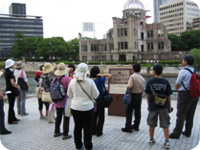
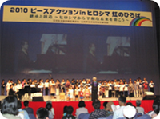
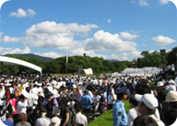
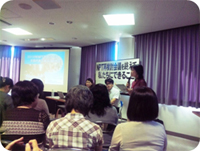
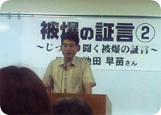
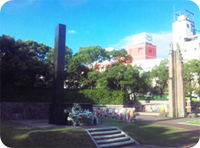

｢2010ヒロシマ・ナガサキ行動｣報告
｢核兵器の廃絶と戦争のない平和な世界｣を願って、8月4日から9日まで日本生協連の「ピースアクションinヒロシマ・ナガサキ」が行われました。ヒロシマ行動にさいたまコープ8人と医療生協さいたま57人、埼玉県生協連1人、ナガサキ行動に埼玉県生協連1人が参加しました。
■「ヒロシマ行動」8月4日～6日
「朗読と被爆の証言」被爆の証言(幸元省二郎さん)
小学校2年生の時に爆心地から1.5kmで被爆。当時7歳だった幸元さんは、何が起きたか理解できずに信じられない光景を次々に目の当たりにしてきたことや家庭を持ってからの差別や子どもへの影響についてなど、被爆による様々な体験を証言されました。
｢フィールドワーク｣平和記念公園内コース
原爆ドームから原爆供養塔、韓国人原爆犠牲者慰霊碑、原爆死没者慰霊碑、原爆の子の像など、平和記念公園内の主な遺構・慰霊碑などを中心に見学しました。原爆の子の像では、さいたまコープの組合員が持参した折鶴を納めるなど、ヒロシマへ送り出してくれた組合員の想いも一緒に持ち歩きながら碑めぐりを行いました。
｢ヒロシマ虹のひろば｣広島県立総合体育館(53生協・約1200人参加)
 日本生協連の芳賀専務は｢NPT再検討会議では、10年ぶりに核兵器をなくす国際的な最終文書が採択されました。会議を成功させるために、生協からは105名の代表団を派遣し被爆者と共に一週間行動をしました。核兵器廃絶を願い、世界・日本を動かしていけるような活動を日本生協連は皆さんと一緒にしていきたい。」と主催者を代表してあいさつされました。続いて、秋葉広島市長が｢今年5月のNPT再検討会議において、核兵器廃絶に向けて行動を開始することに合意する最終文書が採択され世界は大きく動き始めています。今後とも私たちと共に行動して下さることを期待します。｣とあいさつされました。黙祷後、元日本生協連会長の竹本成徳氏が、著書｢さいごのトマト～ヒロシマを、わたし自身の『ことば』で～｣の内容で被爆の証言をされました。次に、｢みんなのひろば｣で、各生協の平和の活動と交流を行い、最後にヒロシマ虹のひろば合唱団による大合唱が行なわれました。
 「広島市原爆死没者慰霊式並びに平和祈念式」
「広島市原爆死没者慰霊式並びに平和祈念式」
 秋葉広島市長は、非核三原則の法制化と核の傘からの離脱を日本政府に求める内容も含めて「全ての被爆者が“生きていて良かった”と心から喜べる核兵器のない世界を一日も早く実現することこそ、私たち人類に課せられ、死力を尽くして遂行しなければならない責務である。」と平和宣言をされました。今年は、国連事務総長の他、核保有国の米･英･仏の代表が初参列しました。
■「ナガサキ行動」8月7日～8日
｢NPT再検討会議を終えて、私たちにできること｣ 長崎原爆被災者協議会
 5月に開催された核不拡散条約(NPT)再検討会議についての成果と今後の課題について、NPO法人ピースデポの中村桂子氏から講演がありました。中村氏は｢根強い核抑止信奉がある反面、核兵器のない世界への国際気運の高まり｣があることの解析を行い、包括的アプローチの必要性を説きました。現存する唯一の多国間核軍縮条約であるNPT再検討会議で｢64項目の行動計画を含む最終文書が採択され、核兵器禁止条約に関する言及など、一定の前進があった｣と評価しました。また、核抑止論を超えるために、核兵器なき安全保障の追及とともに、核兵器禁止条約と非核兵器地帯条約をめざす包括的アプローチについて報告されました。
ララコープ生協より、NPT生協代表団の活動について報告がありました。日本被団協の代表52人の行動をサポートした日本生協連代表団105人(47生協、生協連)は、合同の代表団を結成し、10名前後のグループに分かれ、学校施設や国連の原爆パネル展で証言活動を行いました。また、各国政府代表部への訪問や国際平和会議への参加、国連での傍聴など多くの行動に参加しました。
「じっくり聞く被爆の証言(証言者：池田早苗さん)」 長崎原爆被災者協議会
 最初に、日本被団協の方からニューヨーク行動を含めたNPTに向けて、募金を含めた生協の取り組みに感謝の挨拶がありました。また、被爆者は高齢になっており、｢これからもお力をかしてほしい｣との言葉もありました。池田さんは、12歳の時、母親と郊外に買い出しに行く途中、爆心地より2kmの屋外で被爆。自宅(爆心地より800m)で被爆した姉、妹・弟の5人は、8月18日までに亡くなり、仕事に出て行った父は、被爆直後から眼が見えなくなり、昭和31年に亡くなりました。母親も23才の時に亡くなり、1人になりました。人間も動物も昆虫もみんな死にました。核兵器は人類の滅亡につながりますと話されました。
「ナガサキ虹のひろば」～長崎市民会館文化ホール
全員で黙祷後に、日本生協連の山下会長が｢NPTでは被爆者を支え、世界に発信をしてきました。具体的なロードマップが必用です。前進面を評価し、次の一歩を踏み出そう｣と主催者を代表して挨拶がありました。
 ジャーナリストの高瀬氏は「旧浦上天主堂の廃墟の写真を使い、「消えたもう一つの原爆ドーム」として旧浦上天主堂の取り壊しに係る調査の報告を行いました。続いて田上富久長崎市長からの挨拶、長崎北保育園の園児のみなさんによる、エネルギッシュな｢龍踊り｣の披露がありました。最後のフィナーレでは、岩屋中学校のみなさんによる合唱が行われました。